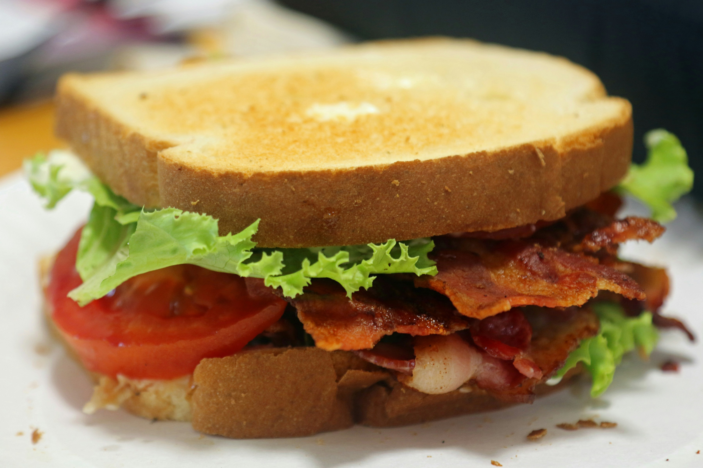

Home Page
BLT

David Trinks on Unsplash">
Description
A simple recipe comprised of the classic flavors you only get
from bacon, lettuce, tomato, and mayo all 'sandwiched' between two fluffy pieces of bread.
Ingredients
- 4 Slices of Bacon
- 2 Leaves of Lettuce
- 2 Slices of Tomato
- 2 Slices of Fluffy, Toasted Bread
- 1 Tablespoon of Mayonnaise
Steps to Make
- Gather all ingredients
- Cook bacon in a large, deep skillet
over medium-high heat until crispy (approx 10 minutes).
Drain and pat dry on a paper towel-lined plate
- Arrange the cooked bacon, lettuce, and tomato slices on one
slice of bread. Spread the mayonnaise on the other slice of bread.
- Close to make a sandwich.